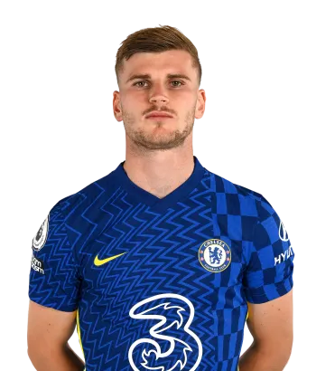

starting xi: 3-4-3
Goalkeeper
16
Defenders
4
andreas christensen
6
thiago silva
2
antonio rudiger
MIDFIELDERS
24
reece james
7
n'golo kante
5
jorginho 
21
ben chillwell
forwards
19
mason mount

9
romelu lukaku

29
kai havert
substituttion
1
Kepa Arrizabalaga
3
marcos alonso
28
cesar Azpilicueta
8
matteo Kovacic
12
ruben Loftus-Cheek

11
timo Werner
10
christian Pulisic
22
hakim Ziyech
Manager
Thomas Tuchel
Nationality:
Date Of Birth:
August 29th, 1973
career record
Played Game: 48
Win: 35
Lose: 9
Win Rate: 73%
Biography
Thomas Tuchel was appointed as head coach on 26 January 2021, moving to Stamford Bridge following a two-and-a-half year spell at French champions Paris Saint-Germain, which came to an end the month before....
He replaced Frank Lampard in the role and became the first German to manage Chelsea. He won four major honours and reached the Champions League final during his time in the French capital. Prior to that, he spent seven seasons coaching in the Bundesliga, first with Mainz, where he led them into the Europa League, and then a successful period with Borussia Dortmund where he won the German Cup.......
Chelsea kit 2021-2022


Chelsea Match Home Shirt 2021/22


Chelsea Match Away Shirt 2021/22


Chelsea Match Third Shirt 2021/22

Chelsea Home Goalkeeper Shirt 2021/22

Chelsea Black Strike Track Jacket 2021/22

Chelsea Pre Match Top 2021/22
Club Legends